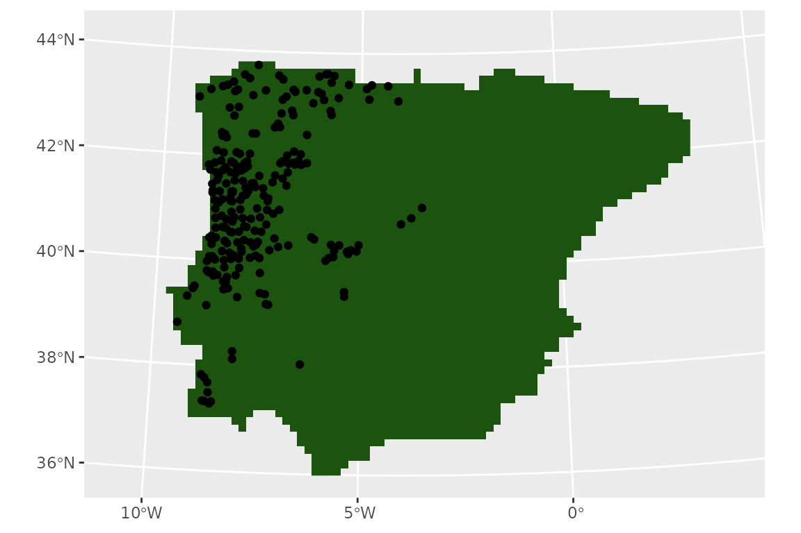
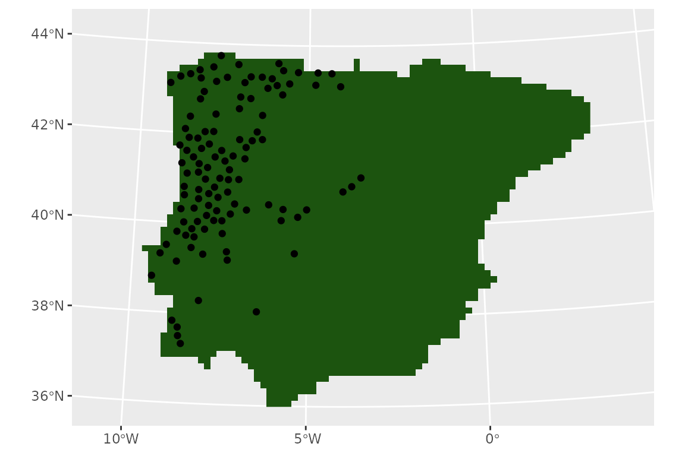
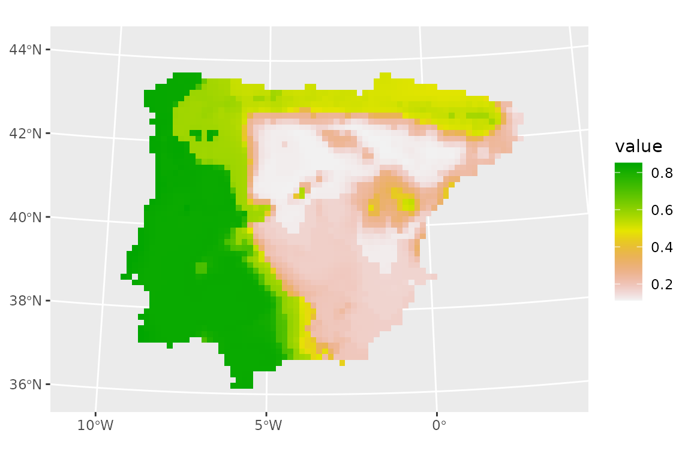

SDMs with tidymodels
Species Distribution Modelling relies on several algorithms, many of
which have a number of hyperparameters that require turning. The
tidymodels universe includes a number of packages
specifically design to fit, tune and validate models. The advantage of
tidymodels is that the models syntax and the results
returned to the users are standardised, thus providing a coherent
interface to modelling. Given the variety of models required for SDM,
tidymodels is an ideal framework. tidysdm
provides a number of wrappers and specialised functions to facilitate
the fitting of SDM with tidymodels.
This article provides an overview of the how tidysdm
facilitates fitting SDMs. Further articles, detailing how to use the
package for palaeodata, fitting more complex models and how to
troubleshoot models can be found on the tidisdm
website. As tidysdm relies on tidymodels,
users are advised to familiarise themselves with the introductory
tutorials on the tidymodels
website.
When we load tidysdm, it automatically loads
tidymodels and all associated packages necessary to fit
models:
library(tidysdm)
#> Loading required package: tidymodels
#> ── Attaching packages ────────────────────────────────────── tidymodels 1.2.0 ──
#> ✔ broom 1.0.7 ✔ recipes 1.1.0
#> ✔ dials 1.3.0 ✔ rsample 1.2.1
#> ✔ dplyr 1.1.4 ✔ tibble 3.2.1
#> ✔ ggplot2 3.5.1 ✔ tidyr 1.3.1
#> ✔ infer 1.0.7 ✔ tune 1.2.1
#> ✔ modeldata 1.4.0 ✔ workflows 1.1.4
#> ✔ parsnip 1.2.1 ✔ workflowsets 1.1.0
#> ✔ purrr 1.0.2 ✔ yardstick 1.3.1
#> ── Conflicts ───────────────────────────────────────── tidymodels_conflicts() ──
#> ✖ purrr::discard() masks scales::discard()
#> ✖ dplyr::filter() masks stats::filter()
#> ✖ dplyr::lag() masks stats::lag()
#> ✖ recipes::step() masks stats::step()
#> • Use suppressPackageStartupMessages() to eliminate package startup messages
#> Loading required package: spatialsampleAccessing the data for this vignette: how to use
rgbif
We start by reading in a set of presences for a species of lizard
that inhabits the Iberian peninsula, Lacerta schreiberi. This
data is taken from GBIF Occurrence Download (6 July 2023) https://doi.org/10.15468/dl.srq3b3. The dataset is
already included in the tidysdm package:
data(lacerta)
head(lacerta)
#> # A tibble: 6 × 3
#> ID latitude longitude
#> <dbl> <dbl> <dbl>
#> 1 858029749 42.6 -7.09
#> 2 858029738 42.6 -7.09
#> 3 614631090 41.4 -7.90
#> 4 614631085 41.3 -7.81
#> 5 614631083 41.3 -7.81
#> 6 614631080 41.4 -7.83Alternatively, we can easily access and manipulate this dataset using
rbgif. Note that the data from GBIF often requires some
level of cleaning. Here we will use a simple cleaning function from the
CoordinateCleaner; in general, we recommend to inspect the
data that are flagged as problematic, rather than just accepting them as
we do here:
# download presences
library(rgbif)
occ_download_get(key = "0068808-230530130749713", path = tempdir())
# read file
library(readr)
distrib <- read_delim(file.path(tempdir(), "0068808-230530130749713.zip"))
# keep the necessary columns and rename them
lacerta <- distrib %>% select(gbifID, decimalLatitude, decimalLongitude) %>%
rename(ID = gbifID, latitude = decimalLatitude, longitude = decimalLongitude)
# clean up the data
library(CoordinateCleaner)
lacerta <- clean_coordinates(x = lacerta,
lon = "longitude",
lat = "latitude",
species = "ID",
value = "clean")Preparing your data
First, let us visualise our presences by plotting on a map.
tidysdm works with sf objects to represent
locations, so we will cast our coordinates into an sf
object, and set its projections to standard ‘lonlat’ (crs =
4326).
library(sf)
#> Linking to GEOS 3.10.2, GDAL 3.4.1, PROJ 8.2.1; sf_use_s2() is TRUE
lacerta <- st_as_sf(lacerta, coords = c("longitude", "latitude"))
st_crs(lacerta) <- 4326It is usually advisable to plot the locations directly on the raster
that will be used to extract climatic variables, to see how the
locations fall within the discrete space of the raster. For this
vignette, we will use WorldClim as our source of climatic information.
We will access the WorldClim data via the library pastclim;
even though this library, as the name suggests, is mostly designed to
handle palaeoclimatic reconstructions, it also provides convenient
functions to access present day reconstructions and future projections.
pastclim has a handy function to get the land mask for the
available datasets, which we can use as background for our locations. We
will cut the raster to the Iberian peninsula, where our lizard lives.
For this simply illustration, we will not bother to project the raster,
but an equal area projection would be desirable…
library(pastclim)
download_dataset(dataset = "WorldClim_2.1_10m")
land_mask <-
get_land_mask(time_ce = 1985, dataset = "WorldClim_2.1_10m")
# Iberia peninsula extension
iberia_poly <-
terra::vect(
"POLYGON((-9.8 43.3,-7.8 44.1,-2.0 43.7,3.6 42.5,3.8 41.5,1.3 40.8,0.3 39.5,
0.9 38.6,-0.4 37.5,-1.6 36.7,-2.3 36.3,-4.1 36.4,-4.5 36.4,-5.0 36.1,
-5.6 36.0,-6.3 36.0,-7.1 36.9,-9.5 36.6,-9.4 38.0,-10.6 38.9,-9.5 40.8,
-9.8 43.3))"
)
crs(iberia_poly) <- "lonlat"
# crop the extent
land_mask <- crop(land_mask, iberia_poly)
# and mask to the polygon
land_mask <- mask(land_mask, iberia_poly)#> Loading required package: terra
#> terra 1.7.78
#>
#> Attaching package: 'terra'
#> The following object is masked from 'package:tidyr':
#>
#> extract
#> The following object is masked from 'package:scales':
#>
#> rescale
#> [1] TRUEFor plotting, we will take advantage of tidyterra, which
makes handling of terra rasters with ggplot a
breeze.
library(tidyterra)
#>
#> Attaching package: 'tidyterra'
#> The following object is masked from 'package:stats':
#>
#> filter
library(ggplot2)
ggplot() +
geom_spatraster(data = land_mask, aes(fill = land_mask_1985)) +
geom_sf(data = lacerta) +
guides(fill="none")
Thinning step
Now, we thin the observations to have one per cell in the raster (it would be better if we had an equal area projection…):
set.seed(1234567)
lacerta <- thin_by_cell(lacerta, raster = land_mask)
nrow(lacerta)
#> [1] 226
ggplot() +
geom_spatraster(data = land_mask, aes(fill = land_mask_1985)) +
geom_sf(data = lacerta) +
guides(fill="none")
Now, we thin further to remove points that are closer than 20km.
However, note that the standard map units for a ‘lonlat’ projection are
meters. tidysdm provides a convening conversion function,
km2m(), to avoid having to write lots of zeroes):
set.seed(1234567)
lacerta_thin <- thin_by_dist(lacerta, dist_min = km2m(20))
nrow(lacerta_thin)
#> [1] 111Let’s see what we have left of our points:
ggplot() +
geom_spatraster(data = land_mask, aes(fill = land_mask_1985)) +
geom_sf(data = lacerta_thin) +
guides(fill="none")
We now need to select points that represent the potential available
area for the species. There are two approaches, we can either sample the
background with sample_background(), or we can generate
pseudo-absences with sample_pseudoabs(). In this example,
we will sample the background; more specifically, we will attempt to
account for potential sampling biases by using a target group approach,
where presences from other species within the same taxonomic group are
used to condition the sampling of the background, providing information
on differential sampling of different areas within the region of
interest.
We will start by downloading records from 8 genera of Lacertidae, covering the same geographic region of the Iberian peninsula from GBIF https://doi.org/10.15468/dl.53js5z:
library(rgbif)
occ_download_get(key = "0121761-240321170329656", path = tempdir())
library(readr)
backg_distrib <- readr::read_delim(file.path(tempdir(),
"0121761-240321170329656.zip"))
# keep the necessary columns
lacertidae_background <- backg_distrib %>%
select(gbifID, decimalLatitude, decimalLongitude) %>%
rename(ID = gbifID, latitude = decimalLatitude, longitude = decimalLongitude)
# convert to an sf object
lacertidae_background <- st_as_sf(lacertidae_background,
coords = c("longitude", "latitude"))
st_crs(lacertidae_background) <- 4326We need to convert these observations into a raster whose values are the number of records (which will be later used to determine how likely each cell is to be used as a background point):
lacertidae_background_raster <- rasterize(lacertidae_background, land_mask,
fun = "count")
plot(lacertidae_background_raster)
We can see that the sampling is far from random, with certain locations having very large number of records. We can now sample the background, using the ‘bias’ method to represent this heterogeneity in sampling effort:
set.seed(1234567)
lacerta_thin <- sample_background(data = lacerta_thin, raster = lacertidae_background_raster,
n = 3 * nrow(lacerta_thin),
method = "bias",
class_label = "background",
return_pres = TRUE)Let’s see our presences and background:
ggplot() +
geom_spatraster(data = land_mask, aes(fill = land_mask_1985)) +
geom_sf(data = lacerta_thin, aes(col = class)) +
guides(fill="none")
We can use pastclim to download the WorldClim dataset
(we’ll use the 10 arc-minute resolution) and extract the bioclimatic
variables that are available (but you do not have to use
pastclim, you could use any raster dataset you have access
to, loading it directly with terra).
download_dataset("WorldClim_2.1_10m")
climate_vars <- get_vars_for_dataset("WorldClim_2.1_10m")
climate_present <- pastclim::region_slice(
time_ce = 1985,
bio_variables = climate_vars,
data = "WorldClim_2.1_10m",
crop = iberia_poly
)Note that the dataset covers the period 1970-2000, so
pastclim dates it as 1985 (the midpoint). We have also
cropped it directly to the Iberian peninsula.
Note that, in this vignette, we focus on continuous variables; most
machine learning algorithms do not natively cope with multi-level
factors, but it is possible to use recipes::step_dummy() to
generate dummy variables from factors. A worked example can be found in
the article
on additional features of tidymodels with tidysdm.
Next, we extract climate for all presences and background points:
lacerta_thin <- lacerta_thin %>%
bind_cols(terra::extract(climate_present, lacerta_thin, ID = FALSE))Based on this paper (https://doi.org/10.1007/s10531-010-9865-2), we are interested in these variables: “bio06”, “bio05”, “bio13”, “bio14”, “bio15”. We can visualise the differences between presences and the background using violin plots:
lacerta_thin %>% plot_pres_vs_bg(class)We can see that all the variables of interest do seem to have a different distribution between presences and the background. We can formally quantify the mismatch between the two by computing the overlap:
lacerta_thin %>% dist_pres_vs_bg(class)
#> bio09 bio12 bio16 bio19 bio13 bio05 bio10
#> 0.43907819 0.41888524 0.41487381 0.40742724 0.40492411 0.38854703 0.38610145
#> bio02 bio07 bio04 bio08 bio17 bio15 bio18
#> 0.35191109 0.35036167 0.32450555 0.31879785 0.28143659 0.27152095 0.25007068
#> bio01 bio14 bio03 bio11 altitude bio06
#> 0.24589097 0.24294699 0.18414624 0.11169528 0.07271380 0.06742951Again, we can see that the variables of interest seem good candidates with a clear signal. Let us then focus on those variables:
suggested_vars <- c("bio06", "bio05", "bio13", "bio14", "bio15")Environmental variables are often highly correlated, and collinearity is an issue for several types of models. We can inspect the correlation among variables with:
pairs(climate_present[[suggested_vars]])We can see that some variables have rather high correlation (e.g. bio05 vs bio14). We can subset to variables below a certain threshold correlation (e.g. 0.7) with:
climate_present <- climate_present[[suggested_vars]]
vars_uncor <- filter_collinear(climate_present, cutoff = 0.7, method = "cor_caret")
vars_uncor
#> [1] "bio15" "bio05" "bio13" "bio06"
#> attr(,"to_remove")
#> [1] "bio14"So, removing bio14 leaves us with a set of uncorrelated variables.
Note that filter_collinear has other methods based on
variable inflation that would also be worth exploring. For this example,
we will remove bio14 and work with the remaining variables.
Fit the model by cross-validation
Next, we need to set up a recipe to define how to handle
our dataset. We don’t want to do anything to our data in terms of
transformations, so we just need to define the formula (class
is the outcome, all other variables are
predictors; note that, for sf objects,
geometry is automatically replaced by X and
Y columns which are assigned a role of coords,
and thus not used as predictors):
lacerta_rec <- recipe(lacerta_thin, formula = class ~ .)
lacerta_rec
#>
#> ── Recipe ──────────────────────────────────────────────────────────────────────
#>
#> ── Inputs
#> Number of variables by role
#> outcome: 1
#> predictor: 4
#> coords: 2In classification models for tidymodels, the assumption
is that the level of interest for the response (in our case, presences)
is the reference level. We can confirm that we have the data correctly
formatted with:
lacerta_thin %>% check_sdm_presence(class)
#> [1] TRUEWe now build a workflow_set of different models,
defining which hyperparameters we want to tune. We will use
glm, random forest, boosted_trees and
maxent as our models (for more details on how to use
workflow_sets, see this
tutorial). The latter three models have tunable hyperparameters. For
the most commonly used models, tidysdm automatically
chooses the most important parameters, but it is possible to fully
customise model specifications (e.g. see the help for
sdm_spec_rf).
lacerta_models <-
# create the workflow_set
workflow_set(
preproc = list(default = lacerta_rec),
models = list(
# the standard glm specs
glm = sdm_spec_glm(),
# rf specs with tuning
rf = sdm_spec_rf(),
# boosted tree model (gbm) specs with tuning
gbm = sdm_spec_boost_tree(),
# maxent specs with tuning
maxent = sdm_spec_maxent()
),
# make all combinations of preproc and models,
cross = TRUE
) %>%
# tweak controls to store information needed later to create the ensemble
option_add(control = control_ensemble_grid())We now want to set up a spatial block cross-validation scheme to tune
and assess our models. We will split the data by creating 3 folds. We
use the spatial_block_cv function from the package
spatialsample. spatialsample offers a number
of sampling approaches for spatial data; it is also possible to convert
objects created with blockCV (which offers further features
for spatial sampling, such as stratified sampling) into an
rsample object suitable to tisysdm with the
function blockcv2rsample.
library(tidysdm)
set.seed(100)
#lacerta_cv <- spatial_block_cv(lacerta_thin, v = 5)
lacerta_cv <- spatial_block_cv(data = lacerta_thin, v = 3, n = 5)
autoplot(lacerta_cv)
We can now use the block CV folds to tune and assess the models (to keep computations fast, we will only explore 3 combination of hyperparameters per model; this is far too little in real life!):
set.seed(1234567)
lacerta_models <-
lacerta_models %>%
workflow_map("tune_grid",
resamples = lacerta_cv, grid = 3,
metrics = sdm_metric_set(), verbose = TRUE
)
#> i No tuning parameters. `fit_resamples()` will be attempted
#> i 1 of 4 resampling: default_glm
#> ✔ 1 of 4 resampling: default_glm (214ms)
#> i 2 of 4 tuning: default_rf
#> i Creating pre-processing data to finalize unknown parameter: mtry
#> ✔ 2 of 4 tuning: default_rf (878ms)
#> i 3 of 4 tuning: default_gbm
#> i Creating pre-processing data to finalize unknown parameter: mtry
#> ✔ 3 of 4 tuning: default_gbm (4.1s)
#> i 4 of 4 tuning: default_maxent
#> ✔ 4 of 4 tuning: default_maxent (1.2s)Note that workflow_set correctly detects that we have no
tuning parameters for glm. We can have a look at the
performance of our models with:
autoplot(lacerta_models)
Now let’s create an ensemble, selecting the best set of parameters for each model (this is really only relevant for the random forest, as there were not hype-parameters to tune for the glm and gam). We will use the Boyce continuous index as our metric to choose the best random forest and boosted tree. When adding members to an ensemble, they are automatically fitted to the full training dataset, and so ready to make predictions.
lacerta_ensemble <- simple_ensemble() %>%
add_member(lacerta_models, metric = "boyce_cont")
lacerta_ensemble
#> A simple_ensemble of models
#>
#> Members:
#> • default_glm
#> • default_rf
#> • default_gbm
#> • default_maxent
#>
#> Available metrics:
#> • boyce_cont
#> • roc_auc
#> • tss_max
#>
#> Metric used to tune workflows:
#> • boyce_contAnd visualise it
autoplot(lacerta_ensemble)
A tabular form of the model metrics can be obtained with:
lacerta_ensemble %>% collect_metrics()
#> # A tibble: 12 × 5
#> wflow_id .metric mean std_err n
#> <chr> <chr> <dbl> <dbl> <int>
#> 1 default_glm boyce_cont 0.573 0.115 3
#> 2 default_glm roc_auc 0.775 0.0138 3
#> 3 default_glm tss_max 0.486 0.0337 3
#> 4 default_rf boyce_cont 0.709 0.0856 3
#> 5 default_rf roc_auc 0.794 0.00648 3
#> 6 default_rf tss_max 0.537 0.0363 3
#> 7 default_gbm boyce_cont 0.659 0.0472 3
#> 8 default_gbm roc_auc 0.789 0.00707 3
#> 9 default_gbm tss_max 0.524 0.0152 3
#> 10 default_maxent boyce_cont 0.651 0.157 3
#> 11 default_maxent roc_auc 0.804 0.00653 3
#> 12 default_maxent tss_max 0.572 0.0111 3Projecting to the present
We can now make predictions with this ensemble (using the default option of taking the mean of the predictions from each model).
prediction_present <- predict_raster(lacerta_ensemble, climate_present)
ggplot() +
geom_spatraster(data = prediction_present, aes(fill = mean)) +
scale_fill_terrain_c() +
# plot presences used in the model
geom_sf(data = lacerta_thin %>% filter(class == "presence"))
We can subset the ensemble to only use the best models, based on the Boyce continuous index, by setting a minimum threshold of 0.7 for that metric. We will also take the median of the available model predictions (instead of the mean, which is the default). The plot does not change much (the models are quite consistent).
prediction_present_boyce <- predict_raster(lacerta_ensemble, climate_present,
metric_thresh = c("boyce_cont", 0.7),
fun = "median"
)
ggplot() +
geom_spatraster(data = prediction_present_boyce, aes(fill = median)) +
scale_fill_terrain_c() +
geom_sf(data = lacerta_thin %>% filter(class == "presence"))
Sometimes, it is desirable to have binary predictions (presence vs absence), rather than the probability of occurrence. To do so, we first need to calibrate the threshold used to convert probabilities into classes (in this case, we optimise the TSS):
lacerta_ensemble <- calib_class_thresh(lacerta_ensemble,
class_thresh = "tss_max",
metric_thresh = c("boyce_cont", 0.7)
)And now we can predict for the whole continent:
prediction_present_binary <- predict_raster(lacerta_ensemble,
climate_present,
type = "class",
class_thresh = c("tss_max"),
metric_thresh = c("boyce_cont", 0.7)
)
ggplot() +
geom_spatraster(data = prediction_present_binary, aes(fill = binary_mean)) +
geom_sf(data = lacerta_thin %>% filter(class == "presence")) +
scale_fill_discrete(na.value = "transparent")
Projecting to the future
WorldClim has a wide selection of projections for the future based on
different models and Shared Socio-economic Pathways (SSP). Type
help("WorldClim_2.1") for a full list. We will use
predictions based on “HadGEM3-GC31-LL” model for SSP 245 (intermediate
green house gas emissions) at the same resolution as the present day
data (10 arc-minutes). We first download the data:
download_dataset("WorldClim_2.1_HadGEM3-GC31-LL_ssp245_10m")Let’s see what times are available:
get_time_ce_steps("WorldClim_2.1_HadGEM3-GC31-LL_ssp245_10m")#> [1] 2030 2050 2070 2090We will predict for 2090, the further prediction in the future that is available.
Let’s now check the available variables:
get_vars_for_dataset("WorldClim_2.1_HadGEM3-GC31-LL_ssp245_10m")#> [1] "bio01" "bio02" "bio03" "bio04" "bio05" "bio06" "bio07" "bio08" "bio09"
#> [10] "bio10" "bio11" "bio12" "bio13" "bio14" "bio15" "bio16" "bio17" "bio18"
#> [19] "bio19"Note that future predictions do not include altitude (as that does not change with time), so if we needed it, we would have to copy it over from the present. However, it is not in our set of uncorrelated variables that we used earlier, so we don’t need to worry about it.
climate_future <- pastclim::region_slice(
time_ce = 2090,
bio_variables = vars_uncor,
data = "WorldClim_2.1_HadGEM3-GC31-LL_ssp245_10m",
crop = iberia_poly
)And predict using the ensemble:
prediction_future <- predict_raster(lacerta_ensemble, climate_future)
ggplot() +
geom_spatraster(data = prediction_future, aes(fill = mean)) +
scale_fill_terrain_c()
Dealing with extrapolation
The total area of projection of the model may include environmental conditions which lie outside the range of conditions covered by the calibration dataset. This phenomenon can lead to misinterpretation of the SDM outcomes due to spatial extrapolation.
tidysdm offers a couple of approaches to deal with this
problem. The simplest one is that we can clamp the environmental
variables to stay within the limits observed in the calibration set:
climate_future_clamped <- clamp_predictors(climate_future,
training = lacerta_thin,
.col= class)
prediction_future_clamped <- predict_raster(lacerta_ensemble,
raster = climate_future_clamped)
ggplot() +
geom_spatraster(data = prediction_future_clamped, aes(fill = mean)) +
scale_fill_terrain_c()
The predictions seem to have changed very little.
An alternative is to allow values to exceed the ranges of the calibration set, but compute the Multivariate environmental similarity surfaces (MESS) (Elith et al. 2010) to highlight areas where extrapolation occurs and thus visualise the prediction’s uncertainty.
We estimate the MESS for the same future time slice used above:
lacerta_mess_future <- extrapol_mess(x = climate_future,
training = lacerta_thin,
.col = "class")
ggplot() + geom_spatraster(data = lacerta_mess_future) +
scale_fill_viridis_b(na.value = "transparent")Extrapolation occurs in areas where MESS values are negative, with the magnitude of the negative values indicating how extreme is in the interpolation. From this plot, we can see that the area of extrapolation is where the model already predicted a suitability of zero. This explains why clamping did little to our predictions.
We can now overlay MESS values with current prediction to visualize areas characterized by spatial extrapolation.
# subset mess
lacerta_mess_future_subset <- lacerta_mess_future
lacerta_mess_future_subset[lacerta_mess_future_subset >= 0] <- NA
lacerta_mess_future_subset[lacerta_mess_future_subset < 0] <- 1
# convert into polygon
lacerta_mess_future_subset <- as.polygons(lacerta_mess_future_subset)
# plot as a mask
ggplot() + geom_spatraster(data = prediction_future) +
scale_fill_viridis_b(na.value = "transparent") +
geom_sf(data = lacerta_mess_future_subset,
fill= "lightgray", alpha = 0.5, linewidth = 0.5)Note that clamping and MESS are not only useful when making predictions into the future, but also into the past and present (in the latter case, it allows us to make sure that the background/pseudoabsences do cover the full range of predictor variables over the area of interest).
The tidymodels universe also includes functions to
estimate the area of applicability in the package waywiser,
which can be used with tidysdm.
Visualising the contribution of individual variables
It is sometimes of interest to understand the relative contribution
of individual variables to the prediction. This is a complex task,
especially if there are interactions among variables. For simpler linear
models, it is possible to obtain marginal response curves (which show
the effect of a variable whilst keeping all other variables to their
mean) using step_profile() from the recipes
package. We use step_profile() to define a new recipe which
we can then bake to generate the appropriate dataset to make the
marginal prediction. We can then plot the predictions against the values
of the variable of interest. For example, to investigate the
contribution of bio05, we would:
bio05_prof <- lacerta_rec %>%
step_profile(-bio05, profile = vars(bio05)) %>%
prep(training = lacerta_thin)
bio05_data <- bake(bio05_prof, new_data = NULL)
bio05_data <- bio05_data %>%
mutate(
pred = predict(lacerta_ensemble, bio05_data)$mean
)
ggplot(bio05_data, aes(x = bio05, y = pred)) +
geom_point(alpha = .5, cex = 1)It is also possible to use DALEX,to explore
tidysdm models; see more details in the tidymodels
additions article.
Repeated ensembles
The steps of thinning and sampling pseudo-absences can have a bit
impact on the performance of SDMs. As these steps are stochastic, it is
good practice to explore their effect by repeating them, and then
creating ensembles of models over these repeats. In
tidysdm, it is possible to create
repeat_ensembles. We start by creating a list of
simple_ensembles, by looping through the SDM pipeline. We
will just use two fast models to speed up the process.
# empty object to store the simple ensembles that we will create
ensemble_list <- list()
set.seed(123) # make sure you set the seed OUTSIDE the loop
for (i_repeat in 1:3) {
# thin the data
lacerta_thin_rep <- thin_by_cell(lacerta, raster = climate_present)
lacerta_thin_rep <- thin_by_dist(lacerta_thin_rep, dist_min = 20000)
# sample pseudo-absences
lacerta_thin_rep <- sample_pseudoabs(lacerta_thin_rep,
n = 3 * nrow(lacerta_thin_rep),
raster = climate_present,
method = c("dist_min", 50000)
)
# get climate
lacerta_thin_rep <- lacerta_thin_rep %>%
bind_cols(terra::extract(climate_present, lacerta_thin_rep, ID = FALSE))
# create folds
lacerta_thin_rep_cv <- spatial_block_cv(lacerta_thin_rep, v = 5)
# create a recipe
lacerta_thin_rep_rec <- recipe(lacerta_thin_rep, formula = class ~ .)
# create a workflow_set
lacerta_thin_rep_models <-
# create the workflow_set
workflow_set(
preproc = list(default = lacerta_thin_rep_rec),
models = list(
# the standard glm specs
glm = sdm_spec_glm(),
# maxent specs with tuning
maxent = sdm_spec_maxent()
),
# make all combinations of preproc and models,
cross = TRUE
) %>%
# tweak controls to store information needed later to create the ensemble
option_add(control = control_ensemble_grid())
# train the model
lacerta_thin_rep_models <-
lacerta_thin_rep_models %>%
workflow_map("tune_grid",
resamples = lacerta_thin_rep_cv, grid = 10,
metrics = sdm_metric_set(), verbose = TRUE
)
# make an simple ensemble and add it to the list
ensemble_list[[i_repeat]] <- simple_ensemble() %>%
add_member(lacerta_thin_rep_models, metric = "boyce_cont")
}
#> i No tuning parameters. `fit_resamples()` will be attempted
#> i 1 of 2 resampling: default_glm
#> ✔ 1 of 2 resampling: default_glm (238ms)
#> i 2 of 2 tuning: default_maxent
#> ✔ 2 of 2 tuning: default_maxent (7.3s)
#> i No tuning parameters. `fit_resamples()` will be attempted
#> i 1 of 2 resampling: default_glm
#> ✔ 1 of 2 resampling: default_glm (247ms)
#> i 2 of 2 tuning: default_maxent
#> ✔ 2 of 2 tuning: default_maxent (7.1s)
#> i No tuning parameters. `fit_resamples()` will be attempted
#> i 1 of 2 resampling: default_glm
#> ✔ 1 of 2 resampling: default_glm (247ms)
#> i 2 of 2 tuning: default_maxent
#> ✔ 2 of 2 tuning: default_maxent (7.7s)Now we can create a repeat_ensemble from the list:
lacerta_rep_ens <- repeat_ensemble() %>% add_repeat(ensemble_list)
lacerta_rep_ens
#> A repeat_ensemble of models
#>
#> Number of repeats:
#> • 3
#>
#> Members:
#> • default_glm
#> • default_maxent
#>
#> Available metrics:
#> • boyce_cont
#> • roc_auc
#> • tss_max
#>
#> Metric used to tune workflows:
#> • boyce_contWe can summarise the goodness of fit of models for each repeat with
collect_metrics(), but there is no autoplot()
function for repeated_ensemble objects.
We can then predict in the usual way (we will take the mean and median of all models):
lacerta_rep_ens <- predict_raster(lacerta_rep_ens, climate_present,
fun = c("mean", "median")
)
ggplot() +
geom_spatraster(data = lacerta_rep_ens, aes(fill = median)) +
scale_fill_terrain_c()